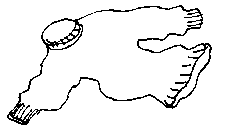

Le Ménage ès Feuvres, St. Ouën, Moussieu l'Rédacteu,
Un janne moussieu mé d'mandit l'aut' jour pourtchi qu' les St. Ouënnais sont appelés Gris Ventres. Eune întéréssante tchestchion. J'criyais, sans doute, qué touos les St. Ouënnais savaient la réponse, car pour dé mé, tchi n'a pon autcheun aut' honneu à mett' au but d'man nom, j'sis ordgilleux d'pouver faithe sèrvi l'chein d'Gris Ventre.
À c'menchi, pour aver l'honneu d'êt' un Gris Ventre i' faut êt' Jèrriais d'race et aver 'té né dans la pâraisse dé St. Ouën. L'temps pâssé, l'titre 'té pus long et distîndgi, car il tait "Gris Ventre et Vèrt Nombrin" et iun acouo pus long pour les femmes qué j'n'ôse pon èrcorder ichîn, mais ché n'tait pon souvent qu' nou ouïyait l'titre en rapport des femmes.
Comment qu' ch'la c'menchit? Eh bein, i' faut r'tchuler jusqu' au seizième siècl'ye. Comme ou l'savez, les femmes Jèrriaises sont fanmeuses à ouvrer, et ch'n'est pon d'aniet. I' y'étaient déjà dans chu temps-là, et i' pathaît qué v'là tchi payait si bein qué l's hommes abandonnîdrent l'agritchultuthe et lus mîndrent à ouvrer comme les femmes. Lé rêsultat en fut qué Jèrri pathaît-i' produisait au mains siex mille pathes dé cauches la s'maine tch'étaient grandement vendues hors pays. Ch'est presqu'încriyabl'ye, mais né v'là tch'est tch'i' s'arrive quand l's hommes obéyissent lus femmes et travaillent d'auve ieux à la pliaiche dé les chicangni et les contrarier!
 L'industrie d'ouvrer d'vînt si importante dans l'Île qué hommes et femmes lus mîndrent à ouvrer des corsets d'oeuvre aussi bein comme des cauches, et les corsets d'vîndrent à êt' connus comme "jerseys" - un titre tch'a subsisté pour corsets d'oeuvre jusqu'au jour d'aniet partout l'monde tchi pâle l' Angliais. Les corsets 'taient généralement ouvrés auve d'la bliue laine, mais les St. Ouënnais, tréjous indépendants, les ouvraient atout d'la grise laine natuthelle. Les pêtcheurs tch'allaient à bâsse-ieau et au baté l's aimaient hardi, les corsets d'oeuvre, car v'là tchi les gardait cauds en mauvais temps. Quand i' v'naient à tèrre et tch'i' déboutonnaient lus câsaques, nou lus viyait chu bieau corset d'oeuvre sus l'ventre, et ch'est d'méme qué les St. Ouënnais c'menchîdrent à ét' appelés Gris Ventres, titre bein connu et honothabl'ye tch'a survétchu à travèrs les siècl'yes.
Mais r'vénons au seizième siècl'ye. L'agritchultuthe d'vînt tellement néglyigie à cause dé l'ouvrage dé cauches et d'corsets qué L's Êtats, en 1606, fûdrent oblyigis d'pâsser eune louai pour empêchi l'ouvrage duthant les saisons d'avoût et d'taillaison.
I' pathaît qu' les gens ouvraient souvent au sé aussi bein comme dé jour, et tch'i' y'avait du rêvillon duthant ches séthées quand les vaîsîns s'assembliaient, et tchiquefais du scandale viyant qué l's hommes embraichaient les femmes, eune couôteunme tch'est appathemment bein ancienne, n'est-ch't-i' pon? J'ai ouï qu' oulle existe acouo au jour d'aniet, mais j'n'en sai pon grand' chose car j'ai tréjous ieu peux des femmes. Jé n'sis pon comme Philippe Picot tchi, lé 10 d'juin, 1615, fut condamné par la Cour à n'pon ouvrer en compangnie des filles, pour éviter lé scandale, et qué s'i' continuait à ouvrer i' fallait qué j'fûsse tout seu siez li, et sans compangnie.
I' faut penser tch'i' s'en pâssait d'pus d'eune sorte à l'occâsion d'ches belles séthées, et j'donn'nais tchiquechose pour pouver r'tchuler l'pâssage du temps et ét' présent à ieune. Lé Dictionnaithe Jèrriais-Français du Docteu Frainque Le Maistre nouos raconte qué dans chu temps là l'hygiène n'était pon comme oulle est d'nouos jours, et qué les puches 'taient souvent louogies l'tou du corps humain. I' pathaît qu' la chaleu humaine lus donnait d'l'appétit et tchi'i c'menchaient à mordre dé temps en temps.
A la pliaiche dé les laîssi mordre à lus tchèr content, les femmes faîsaient sèrvi un p'tit cliu d'flianné tch'il' appelaient un coin pour pînchi les puches quand i' pouvaient mett' lé coin d'ssus et l's écrâser. Appathemment, i' n'y'avait qu' un coin et les femmes lé pâssaient d'ieune à l'autre au bésoin. En ouïy'ous ieune dithe:,"pâsses-mé l'coin, s'i' t'pliaît; J'ai eune puche tchi m'venge!" Et ch'est probabl'ye qué s'i' y'avait d's hommes présents, i' touânnaient l'dos quandi qu' la pouôrre puche fûsse happée! Bon! Ou n'mé criyiz pon?!
Viyiz étout: